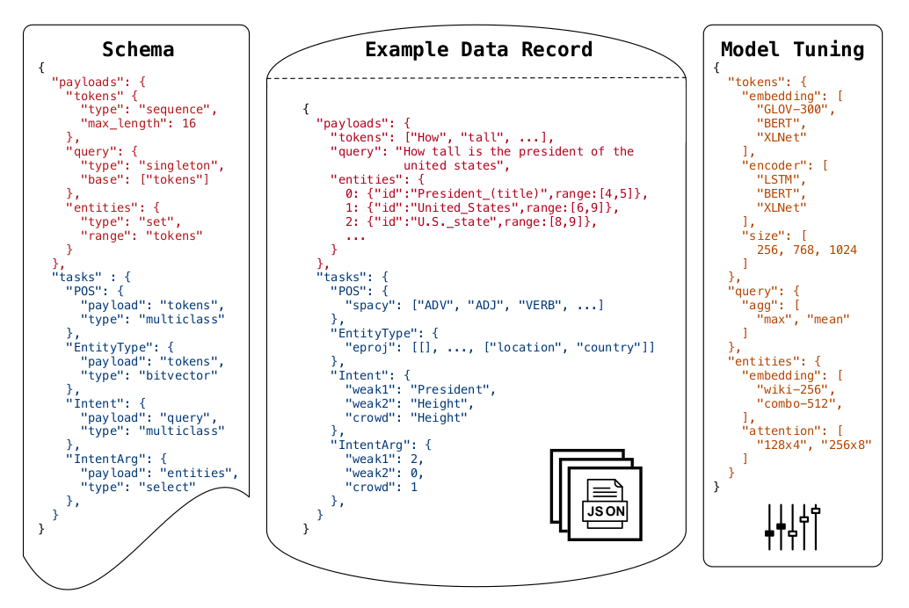
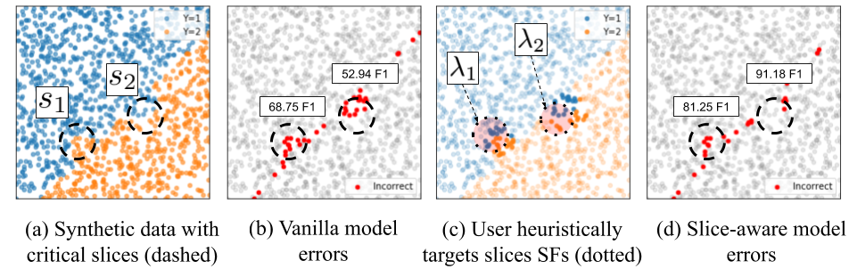
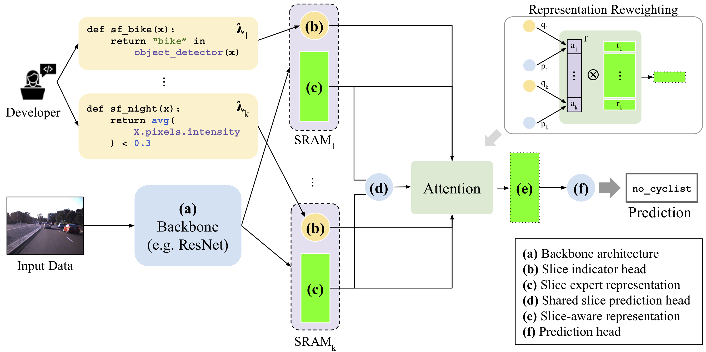

Overton
Apple-flavored ML
2019/10/07 Nantes Machine Learning Meetup
Overview
Overview
What / When / Where
- Publishing date
- Early September
- Conference
- NeurIPS
- Goal
- ML software lifecycle management
- Maturity
- Production
Overview
Challenges to overcome
- Precise monitoring
- Complex pipelines
- Efficient feedback loop
Overview
Architectural choices
- Code-less deep learning
- Multi-task learning
- Weak supervision
Code-less deep learning
Code-less deep learning
Principles
- Models & training code = experts
- “black box” by engineers
Code-less deep learning
Modularity

Code-less deep learning
Configuration
Fine grained ML & multi-tasks
Fine grained ML & multi-tasks
Problems
- Lots of subtasks (implicit & explicit)
- Need to evaluate & monitor them
- Need to improve on them
Fine grained ML & multi-tasks
Approach
Slice-based learning
- Definition of data subsets
- Augmentation of model capacity
- Dedicated metrics
Fine grained ML & multi-tasks
Slice-based learning
Fine grained ML & multi-tasks
Definition of critical data subsets
With “slice functions”:
def sf_bike(x):
return "bike" in object_detector(x)
def sf_night(x):
return avg(X.pixels.intensity) < 0.3
Fine grained ML & multi-tasks
Slice experts
For each slice, an expert:
- should add capacity to the model
- has to know when to trigger
- has to have dedicated metrics
Fine grained ML & multi-tasks
Hard parts
- Noise : slices are defined with heuristics
- Scale 1 : when the number of slices goes up, does the model still run fast enough?
- Scale 2 : when the number of slices goes up, is the model still good enough?
Fine grained ML & multi-tasks
Proposed solution
Resources
Weak supervision
Weak supervision
Problem statement
We need data, but:
- It's expensive, not available, yadda yadda
- Especially for interesting corner cases
- It's noisy
Weak supervision
Solution
Use heuristics
@labeling_function()
def lf_regex_check_out(x):
"""Spam comments say 'check out my video', 'check it out', etc."""
return SPAM if re.search(r"check.*out", x.text, flags=re.I) else ABSTAIN
Weak supervision
Solution
Then correct the loss accounting for their correlation

Weak supervision
Implementation
Overton uses a modified version of the “Label Model” from Snorkel.
Resources
Conclusion
- Modularity (alike AllenNLP, tensor2tensor)
- Dedicated metrics & multi-tasks
- Improvements on critical data subsets
- Artifical data with theoretical corrections